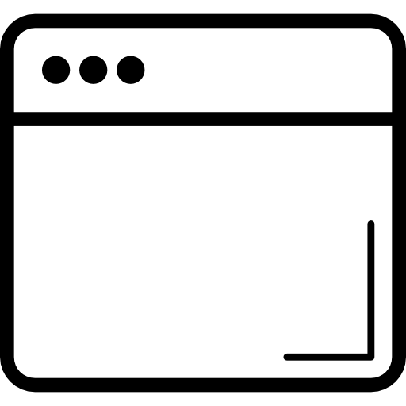

Tired of the mediocre functionality of the default tab management? Then switch to the powerful and flexible MyTabSearch extension – you'll be amazed! MyTabSearch is a Chrome extension that helps you quickly search and switch between your open tabs. With a simple keyboard shortcut, you can access all your open tabs and find the one you need in seconds.
Due to Chrome security restrictions, keyboard shortcuts need to be manually confirmed after installation. Click the button below to set up:
Ctrl+Shift+A: Open tab search | Ctrl+Shift+S: Switch to previous tab | Ctrl+Shift+D: Open pinned tabs